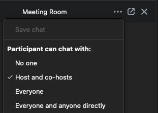
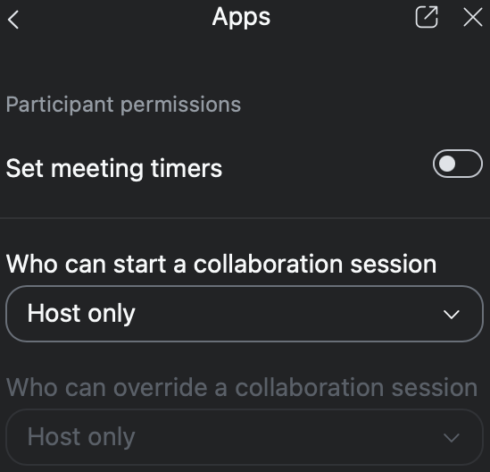

Meeting settings
Pre-meeting & In-meeting, disable tools under Host tools or at zoom.us (preferred).
Account settings on zoom.us
Prefer Account Management > Account Settings over Settings.
- Use settings LOCK to remove disabled items from Host tools.
- Refer to actual Host tools menu to check progress.
Unmute themselves
Potential to disrupt audio.
- Disable Unmute themselves — co-hosts can still Ask to unmute.
- Enable & LOCK Mute all participants when they join a meeting (zoom.us > Account Management > Account Settings).
Chat
Potential for harassment.
- Change Participant can chat with to No one or Host and co-hosts.
View screenshot

Rename themselves
Potential to impersonate participants:
- May result in legitimate participants being misidentified.
- May result in users receiving unauthorized co-host privileges.
- Disable Rename themselves — co-hosts can still Rename others.
Set meeting timers
Potential to disrupt audio with unexpected timer sounds.
- Disable Set meeting timers — co-hosts can still Set meeting timers. (laptop only or Suspend participant activities from mobile)
View screenshot

Start video
Potential to show obscene content.
- Host can Make co-host verified homegroup members — co-hosts can always Start video.
- Disable & LOCK Participants video (zoom.us > Account Management > Account Settings).
Sound notification when someone joins or leaves
Potential to disrupt audio with chimes.
- At zoom.us only, enable Sound notification when someone joins or leaves for Host and co-hosts under Account Management > Account Settings, & (optionally) disable Sound notification when someone joins or leaves under Settings.
- Enable & LOCK to Host and co-hosts in Account Settings — no participants hear chime. Disable or Enable for Host and co-hosts in Settings — sets the default state of the chime.
Other settings
- Select & LOCK Host Only for Who can share? under Screen Sharing (zoom.us > Account Management > Account Settings).
- Disable AI Companion (zoom.us only) — may be disconcerting & anyone can switch it on.
- Disable all other Host tools toggles — potential to disrupt in various ways.
Practice
Make it fun!
- Open a Zoom room with a friend and/or extra device.
- Play with settings so hard you break something! Then fix it!
- Practice with the roles and apps your meeting uses.